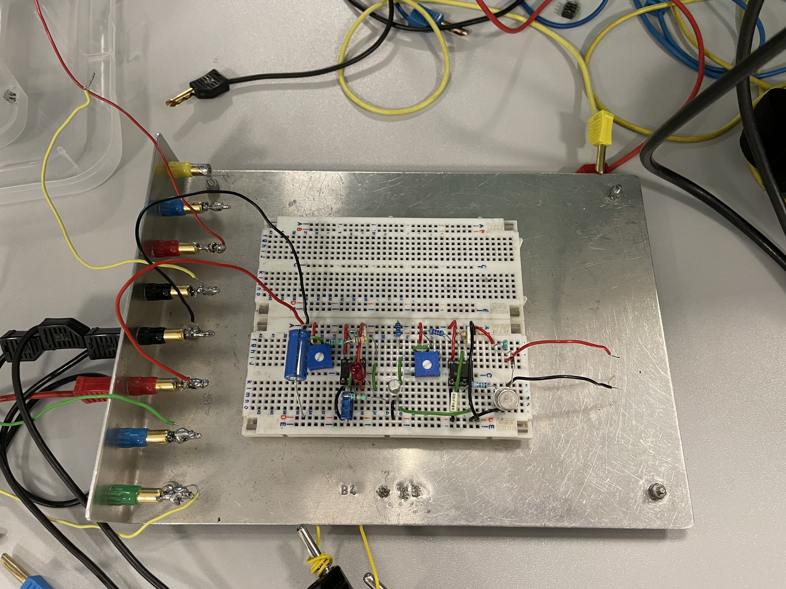
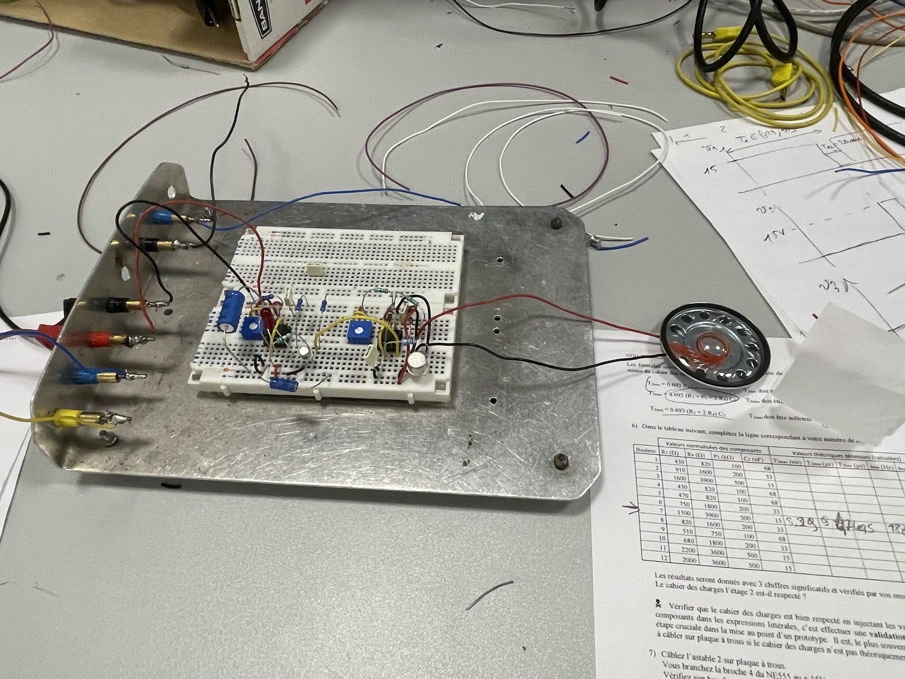
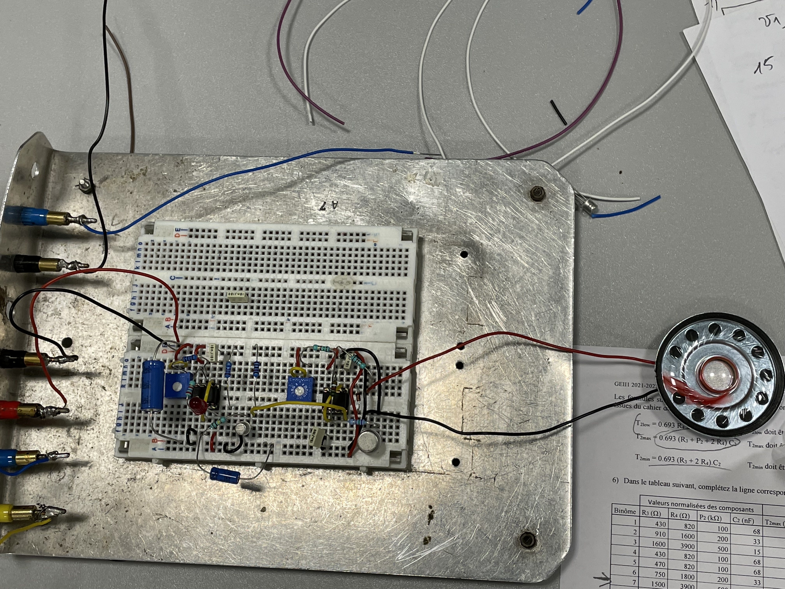
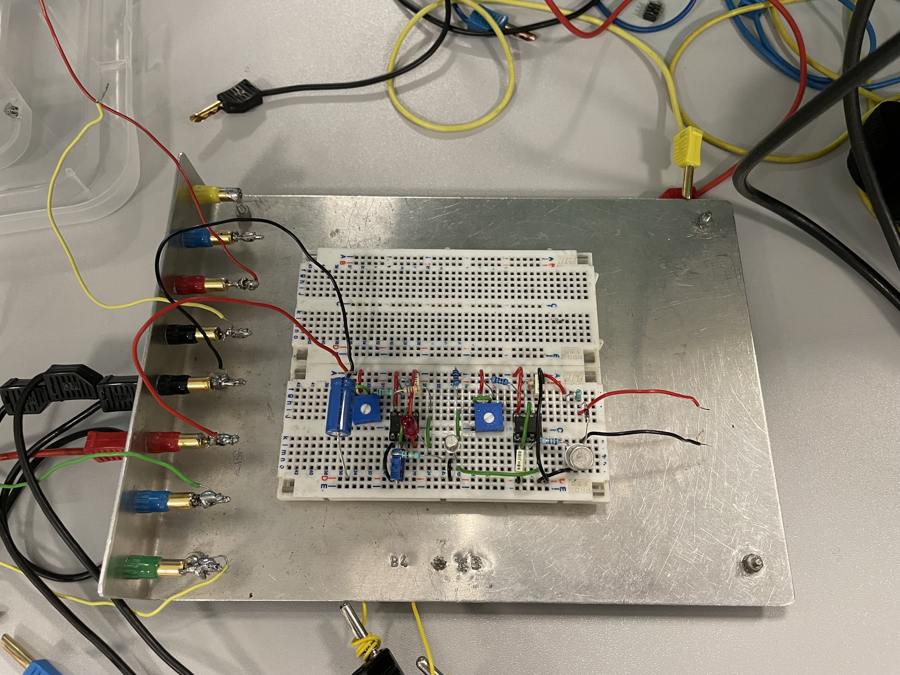
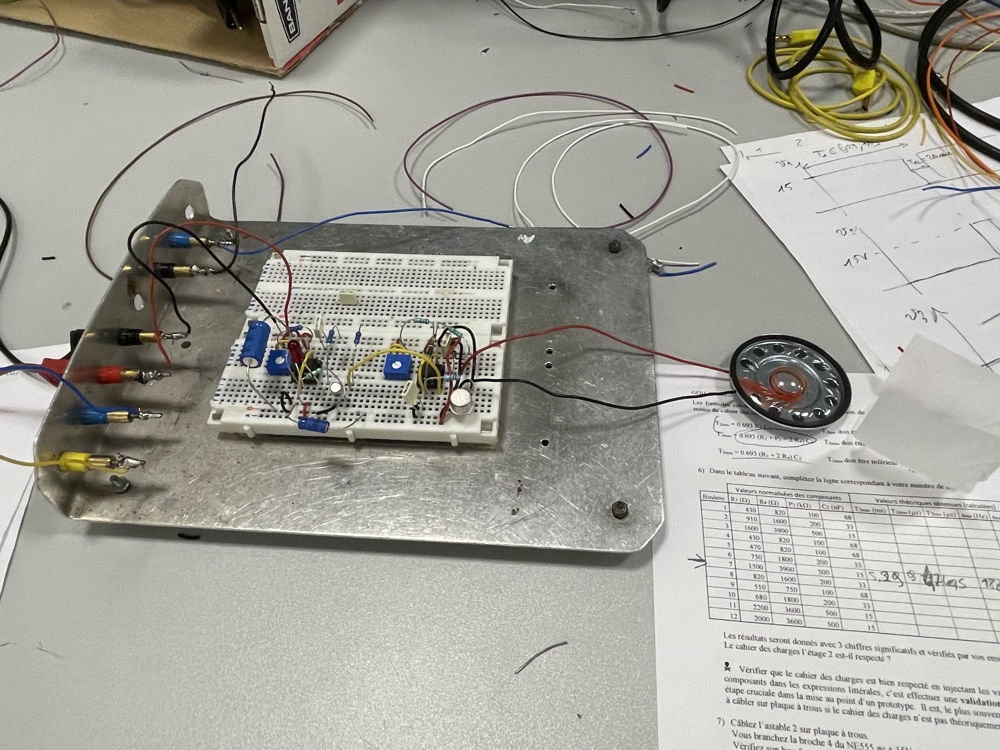
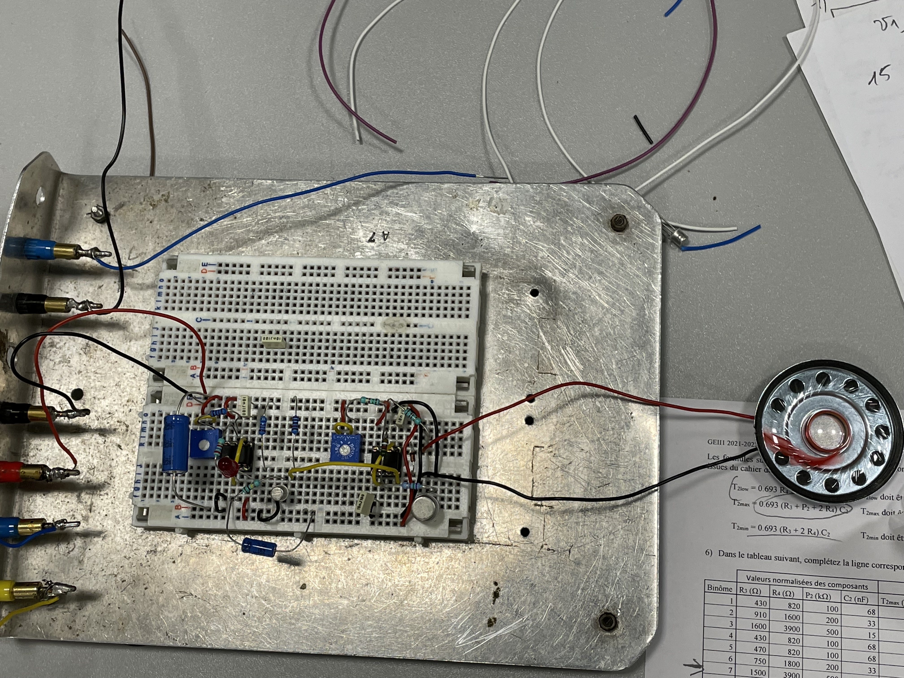

Métronome électrique
Cette SAE présente la conception et la réalisation d'un métronome avec des fonctionnalités spécifiques, notamment la possibilité de régler la fréquence des battements et la hauteur du son. Le métronome répond aux exigences du cahier des charges, offrant une durée de battement proche de 20 ms, une plage de réglage de la fréquence des battements de 40 à 208 BPM, et une plage de fréquence sonore réglable de 250 à 10000 Hz.
Le fonctionnement du métronome repose sur plusieurs composants principaux :
Astable 1, qui génère des signaux rectangulaires pour les battements, avec une fréquence réglable.
Un inverseur pour réguler la tension de sortie.
Astable 2, fournissant la hauteur des battements avec une fréquence réglable.
Un amplificateur pour amplifier le signal.
Un haut-parleur pour émettre le son.
Chaque composant est testé individuellement pour s'assurer de son bon fonctionnement. Après l'assemblage final, le métronome répond aux spécifications du cahier des charges. La conclusion explore des perspectives telles que la possibilité d'alimenter le métronome avec une pile moins puissante pour le rendre plus portable.
Compte rendu ici.
Vous pouvez visionner une vidéo sur YouTube.